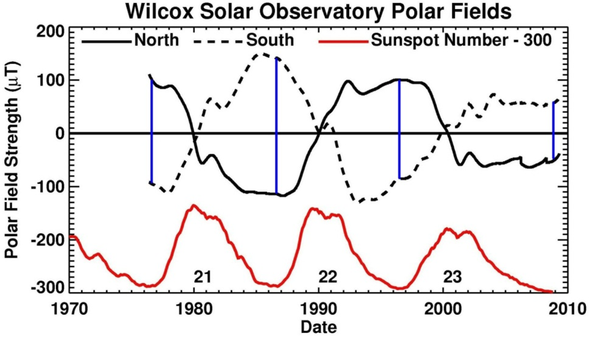

Solar Dynamo Seeds
Polar Magnetic Fields
The strength of the Sun's polar magnetic fields near solar minimum acts as the physical precursor establishing the strength of the subsequent 11-year cycle.
Most solar physicists agree that polar magnetic fields at minimum are the seeds for the next solar cycle. For example, the polar fields observed following the Cycle 23 maximum weakened by approximately 50%. This led to the deeply extended Cycle 23/24 minimum and the subsequent Cycle 24 becoming the weakest cycle in over a century.
Understanding the physics of how magnetic flux is transported to the high latitudes by surface flows — and how the polar fields are modulated — is critical for modern space weather forecasting.

Historical Polar Strength: Plot showing variation of polar magnetic fields over past solar cycles. Field strengths during the Cycle 23/24 minimum were roughly half as strong as the prior two minima.
Real-time Observations
These dynamic plots are updated daily from the AFT Baseline database.

Polar Field Strengths (Updated Daily): Current measurements of the magnetic fields in the polar regions.

Magnetic Butterfly Border (Updated Daily): Close-up view mapping the polar boundaries of the solar butterfly diagram.